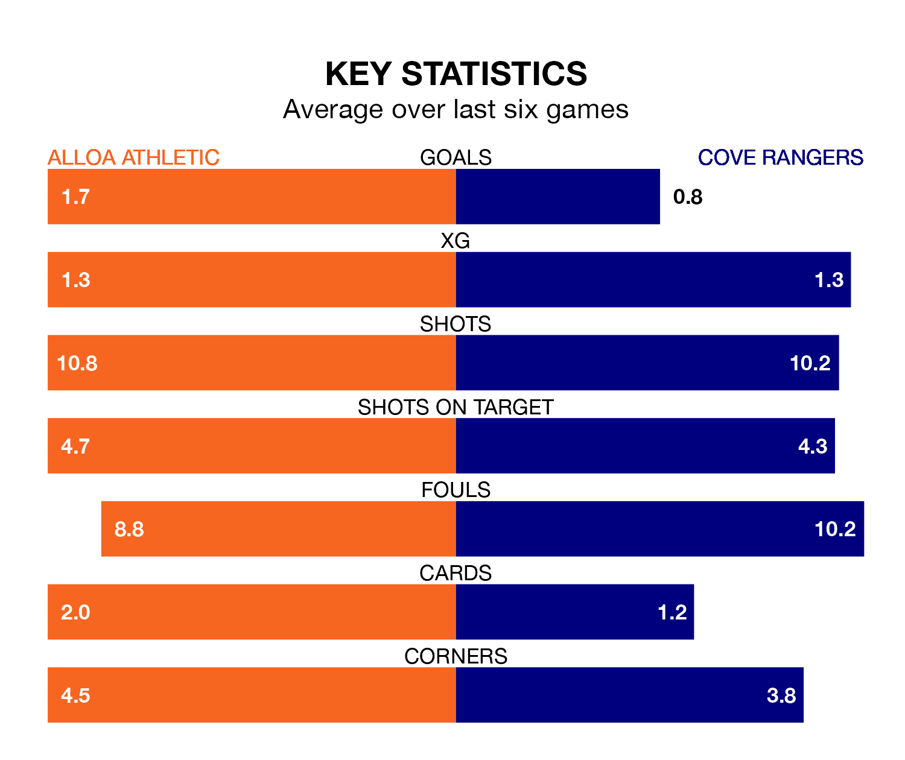

Two of League One's top sides face each other at the Indodrill Stadium in Saturday's kick-off, when third-placed Alloa Athletic host fourth-placed Cove Rangers.
Alloa have picked up 10 wins and five draws from 23 games so far this season, and sit one point above the visitors going into the 3pm match.
The Wee Rangers, meanwhile, have won nine and drawn seven, picking up 34 points.
In Rumarn Burrell, Cove have the league's most on-form striker so far this season. He has notched 18 goals in 23 appearances.
His goal rate of one every 110 minutes is quicker than that of Bobby Wales, Alloa's top scorer with a goal every 215 minutes, and a total of six goals in 15 games.
With 31 goals in 23 games so far this season, Athletic are scoring at below the league average rate with 1.3 goals per game. And they are conceding more than average, letting in 36 goals at a rate of 1.6 per game.
Rangers, meanwhile, are above average scorers, with 1.7 goals per game, compared to a league average of 1.5. They have conceded 1.4 goals per game.
The home side are in good form in League One, with four wins and a draw from their last six games.
With no wins and three draws over that period, the Wee Rangers' form is much worse – they have taken three points from 18, compared to Alloa's 13.
In the last 10 years, Alloa and Cove have played each other on eight occasions. Alloa won three of them, Cove four, and they drew once.
On average, Alloa scored 1.5 goals and the Wee Rangers 1.9 in those matches.
Their last meeting was on December 16, when Alloa won 2-1 away.
Alloa's last match was on Tuesday, a 2-1 win against Annan Athletic, with Conor Sammon and Wales getting the goals for Alloa.
Cove drew 2-2 with Stirling Albion last time out, on February 3, with Burrell and Mitchel Megginson on the scoresheet.
Updated: 13:04 (UTC), 16/02/24